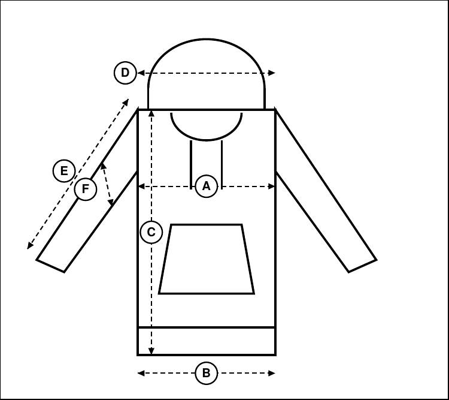
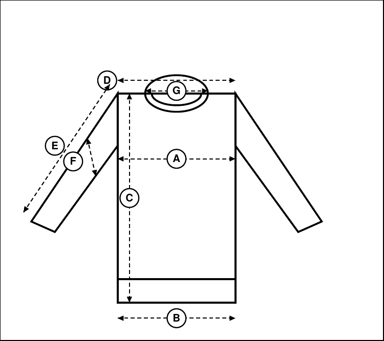
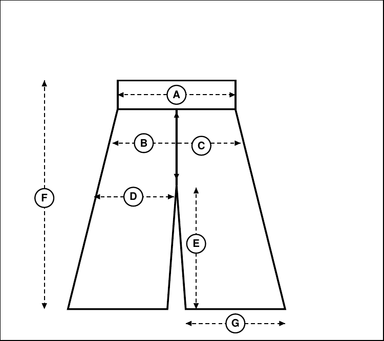

All measurements are in cm, garment laid flat, not stretched. Our fit is boxy and oversized. Compare a piece you already own with the table to find your size.
| Size | Weight | Chest | Hem | Length | Shoulder | Sleeve | Bicep |
|---|---|---|---|---|---|---|---|
| S | 60–72 kg | 58 | 55 | 65 | 52 | 57 | 22 |
| M | 73–85 kg | 62 | 59 | 67 | 54 | 59 | 23.5 |
| L | 86–100 kg | 66 | 63 | 69 | 56 | 61 | 25 |
| XL | 101–120 kg | 70 | 67 | 71 | 59 | 63 | 27 |
| XXL | 121–150 kg | 75 | 72 | 73 | 62 | 65 | 29 |

| Size | Weight | Chest | Hem | Length | Shoulder | Sleeve | Bicep |
|---|---|---|---|---|---|---|---|
| S | 60–72 kg | 61 | 58 | 66 | 54 | 58.5 | 23.5 |
| M | 73–85 kg | 65 | 62 | 68 | 56 | 60.5 | 25 |
| L | 86–100 kg | 69 | 66 | 70 | 58 | 62.5 | 26.5 |
| XL | 101–120 kg | 73 | 70 | 72 | 61 | 64.5 | 28.5 |
| XXL | 121–150 kg | 78 | 75 | 74 | 64 | 66.5 | 30.5 |
| Size | Weight | Chest | Hem | Length | Shoulder | Sleeve | Bicep | Neck opening |
|---|---|---|---|---|---|---|---|---|
| S | 60–72 kg | 58 | 55 | 65 | 52 | 57 | 22 | 22 |
| M | 73–85 kg | 62 | 59 | 67 | 54 | 59 | 23.5 | 23 |
| L | 86–100 kg | 66 | 63 | 69 | 56 | 61 | 25 | 24 |
| XL | 101–120 kg | 70 | 67 | 71 | 59 | 63 | 27 | 25 |
| XXL | 121–150 kg | 75 | 72 | 73 | 62 | 65 | 29 | 26 |

| Size | Weight | Waist (relaxed) | Hip | Rise (front) | Thigh | Inseam | Length | Leg opening |
|---|---|---|---|---|---|---|---|---|
| M | 73–85 kg | 39 | 61 | 31 | 32.5 | 75 | 106 | 34.5 |
| L | 86–100 kg | 43 | 65 | 32 | 34.5 | 76 | 108 | 36 |
| XL | 101–120 kg | 49 | 70 | 34 | 37 | 77 | 111 | 37.5 |
| XXL | 121–150 kg | 55 | 75 | 36 | 39.5 | 78 | 114 | 39 |
